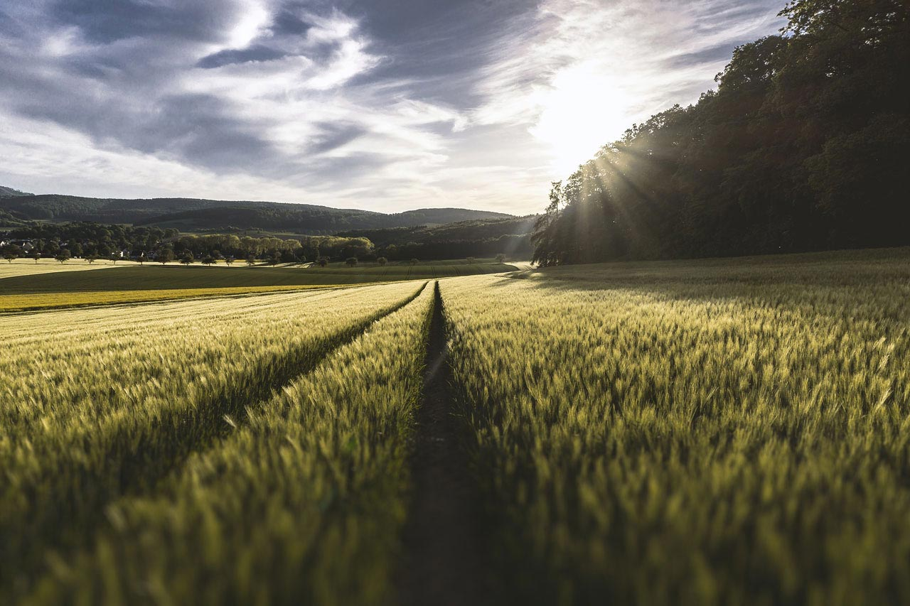
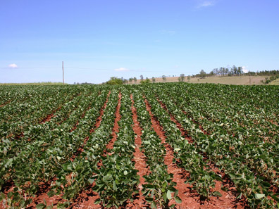

01
Полевые
культуры
Планируем посадки, выбираем схемы ухода и помогаем создать условия для здорового роста.
Узнать больше
Растим будущее вместе
Помогаем выбирать семена, растить здоровые растения
и находить решения в гармонии с природой.
01 / Наши направления
От выбора сорта до ухода за посадками —
сопровождаем каждый
этап роста.
Планируем посадки, выбираем схемы ухода и помогаем создать условия для здорового роста.
Узнать большеПодбираем и тестируем сорта с учётом почвы, климата и устойчивости к болезням.
Узнать большеДелимся рекомендациями по посадке, уходу и сохранению сортовых особенностей плодовых деревьев.
Узнать большеПомогаем разобраться в подкормках, защите от вредителей и бережном уходе за листвой.

02 / О нас
Мы — команда людей, для которых сельское хозяйство начинается с уважения к природе.
Выращиваем растения, подбираем и тестируем семена, изучаем современные агротехнологии и делимся опытом. Нам важно получать качественный урожай и сохранять здоровье земли.
Практический подходЗнания, которые можно применить на своём участке.
Бережное земледелиеЗабота о почве, растениях и окружающей среде.
Открытый диалогПомогаем найти ответы и разобраться в деталях.
03 / Знакомство с культурами
У каждой культуры свой характер.
Откройте карточку, чтобы
узнать больше.
04 / Будем на связи
Расскажите о своих планах.
Вместе найдём подходящее решение.